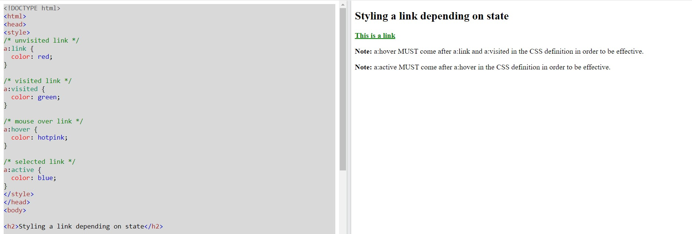
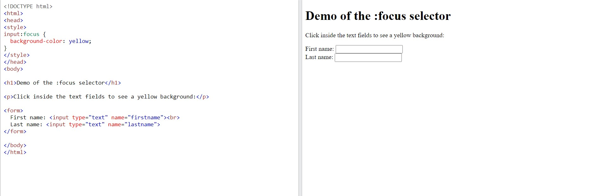
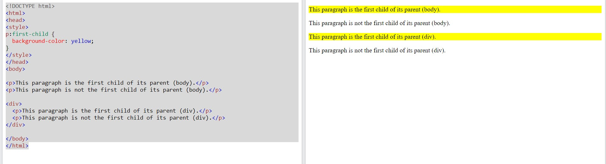
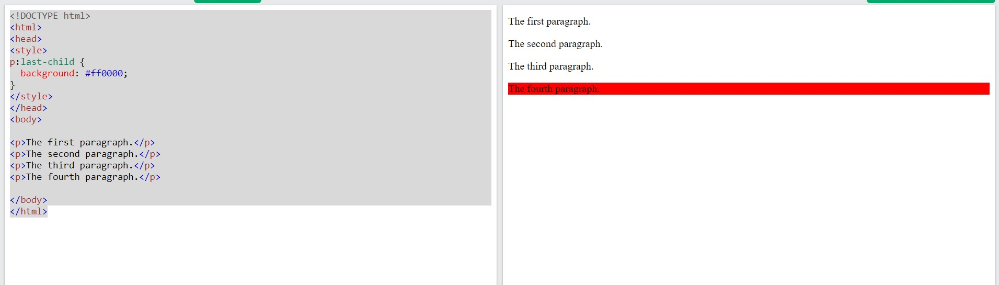
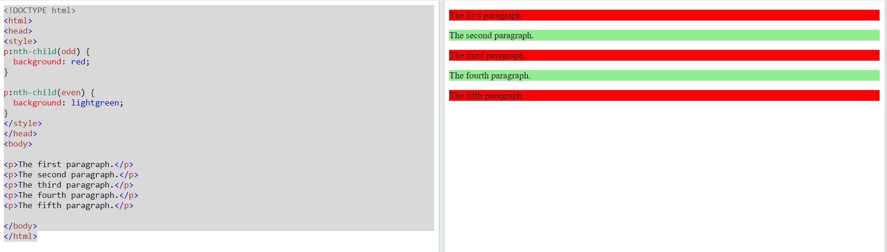
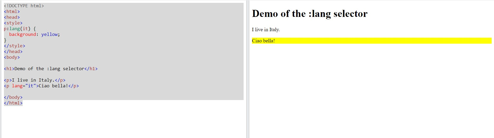
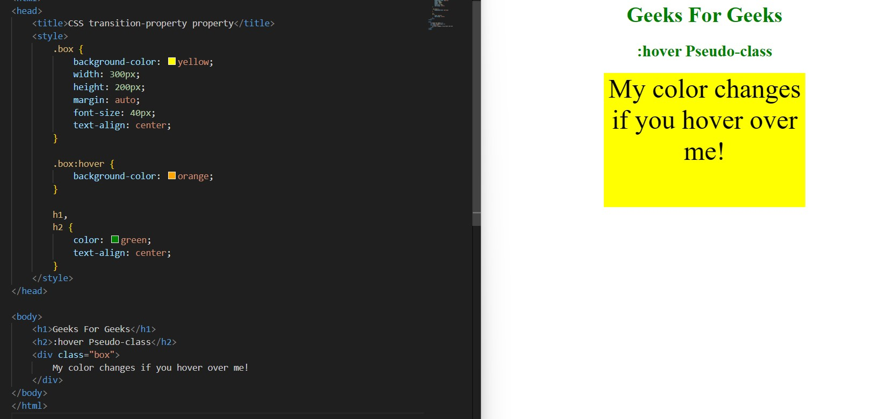

CSS Tables
CSS Pseudo-classes
• Setting styles for different states of hyperlinks

• Setting styles for form element in focus using the :focus pseudo-class

• Setting the styles for first child of an element using the :first-child pseudo-class

• Setting styles for last child of an element using the :first-child pseudo-class

•• Setting styles for nth-child of an element using the :nth-child pseudo-class

• Setting styles for specific language using the :lang() pseudo-class

• Using pseudo-classes with selectors
